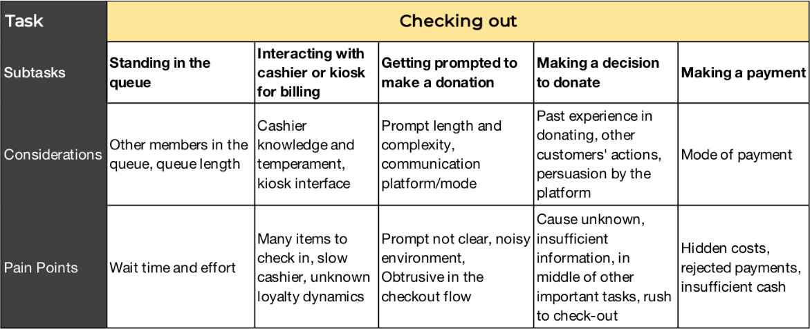
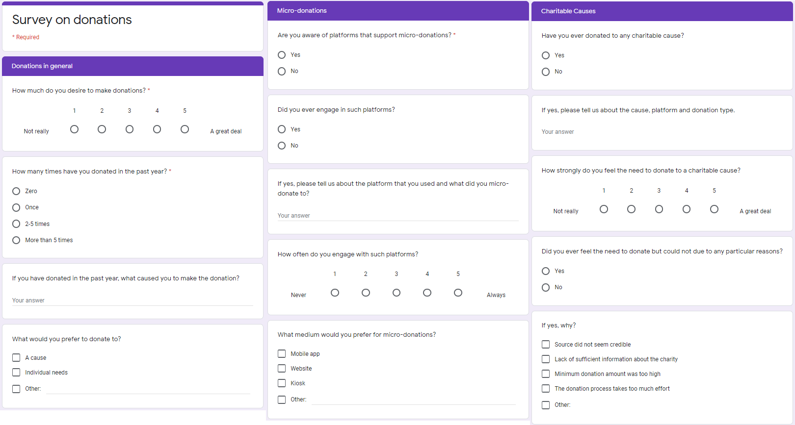
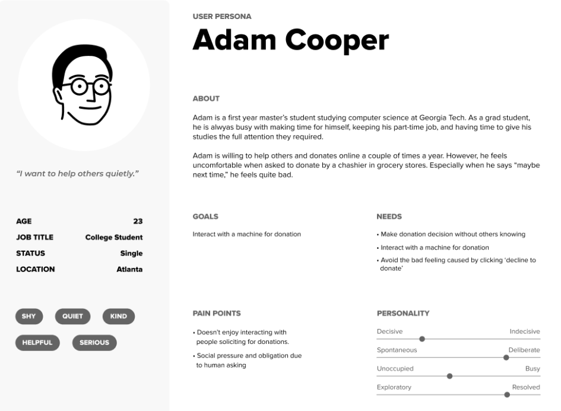
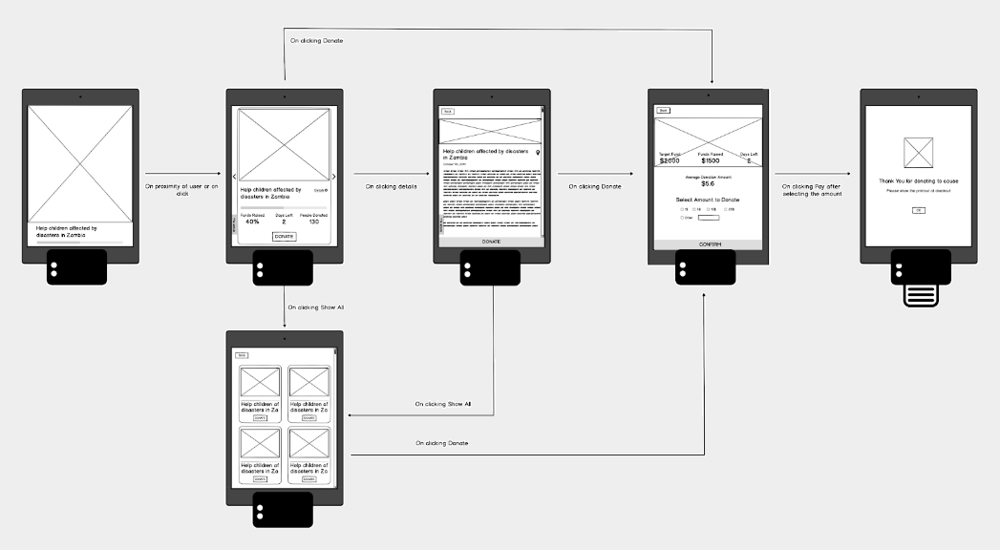
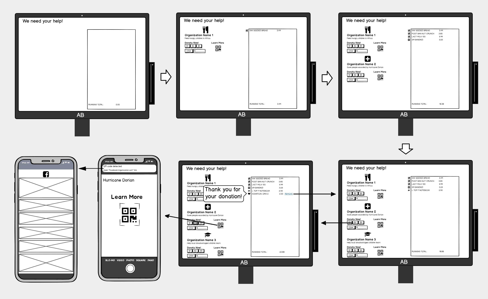
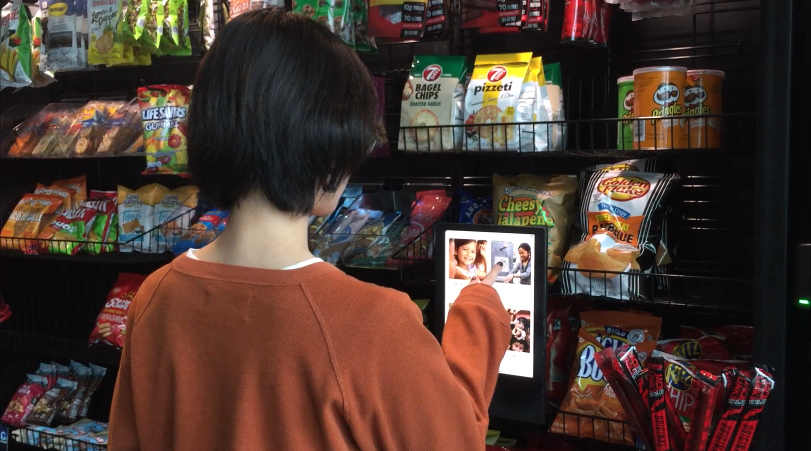
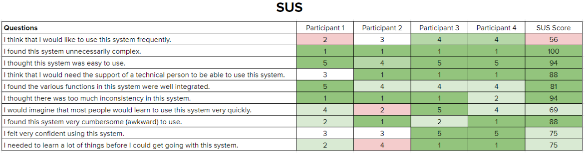

Project Overview
Duration: August 2019 – December 2019
Objective
Understand the domain by exploring background knowledge on charitable donations and our target audience.
Activities
Secondary Research
- Discover existing methods to make a donation to a charitable cause.
- Understand the grocery-shopping habits and donation patterns of millennials.
- Understand the prospects and current practices in making charitable donations.
- Brainstorm and analyze the attributes (abilities, motivations, social attachment, etc.) of millennial potential donors who are shopping at a grocery store.
- Observe and record grocery shoppers' shopping journey from entrance to exit to capture potential points of journey to be utilized for design.
- Delineate possible steps a typical grocery shopper goes through during shopping to identify pain points and design opportunities.
- Understand people's awareness and engagement of micro-donations and factors they consider when deciding to make a donation.
Summary
Charity organizations, which are important stakeholders, can collect a considerable amount of donations through micro-donation in grocery stores, and many grocery stores today participate in charity fundraising. Concerning millennial shoppers, our target audience, current trends indicate that they are likely to make micro-donations in grocery stores. However, they undergo a complex decision-making process before making a donation. Considerations include the credibility of the charity, urgency of the situation, ease of making a donation, and availability of funds.


Objective
Confirm and narrow down insights collected, define a specific problem statement, and prepare for the design phase.
Activities
Focus Group
- Acquire opinions directly from our target audience and confirm findings from previous activities.
- Understand grocery shopping experience.
- Explore people's attitude towards and comments on donation solicitation.
- Identify information that will help the donor make a donation decision.
- Categorize and analyze data collected.
- Identify major insights to focus on.
- Define the general shopping experience to build our designs upon.
- Transform abstract insights from previous activities into 3 concrete personas entailing major insights for better focus during the design phase.
- Brainstorm rough design ideas / solutions according to major insights.
- Evaluate and score each solution based on feasibility (technical constraints and cost), creativity, problem addressed, and effectiveness.
- Define final problem space according to problems solved by the top solutions.
Summary
We determined to focus on relieving pressure caused by donation solicitation, providing potential donors with more information about the donation receivers, and reducing the feeling of confusion when asked to make a donation to a cause unrelated to the grocery store context.



Objective
Create 3 divergent designs that address the problem space.
Activities
Formulating Designs
- List user attributes according to research insights.
- Generate design implications based on user attributes.
- Create solution according to the design implications.
- Depict (with images and narration) user journey for each solution.
- Draw out key frames of the designed solutions to acquire early user feedback.
Summary
We created 3 divergent designs: 1. A kiosk placed in an aisle related to the charity from which customers could acquire knowledge on the charity and make donation decisions. 2. A web app which allows users to explore the world of donation receivers in augmented reality and make a donation decision. Users would access the web app through QR codes placed on posters. 3. Expand the capability of kiosks at checkout counters so that allows users can learn more about the charities and initiate the act of donation. As groceries are checked out, charity related to the items will appear on screen.



Objective
Select 1 solution from the 3 to further develop, refine the selected solution, and evaluate the solution.
Activities
Solution Presentation and Feedback Collection
- Present the solutions to other students and faculty members to collect their views on the three designs.
- Analyze feedback and selected the kiosk in the aisles solution based on feasibility, novelty, and effectiveness in addressing the focus problems.
- Create a partially functional mockup according to wireframe design and feedback collected.
- Evaluate and iterate on the mockup internally (due to time constraints) and develop an almost completely functional web app mockup (front end only).
- Implement the hardware components of the prototype (kiosk case and receipt/barcode printer).
- Interview (semi-structured) participants concerning the experience and design after they interact with the prototype in a store setting.
- Collect quantitative data using the System Usability Scale (SUS) and a custom questionnaire.
- Fixed critical design flaws discovered during product evaluation.
Summary
The final design is a kiosk placed in the aisles which displays a video related to the charity stakeholders to draws users’ attention and encourage interaction. Using the kiosk, users would learn about the background story, number of donors, and the impact they can make. For convenience of payment, the kiosk will print out a barcode which can then be scanned and paid along with other items bought at the checkout counters. The solution received a SUS score of 82, which is much higher than the average SUS score of 68, indicating the success of the design.



My Roles
UX Researcher
UX Designer
Prototyper
Team
Team size: 4. Throughout the project, the team met often to brainstorm ideas and discuss designs and research methods. I had been one of the more active contributors in team discussions and often guided the team to reach conclusions/resolutions. The organizer and analyzer were two unique roles I played on the team. Teammates have entrusted me with the tasks of outlining research plans, analyzing research findings, and the final review of our work reports.
Tools and Languages
JavaScript
HTML5
CSS3
Figma
Balsamic
Miro
My Contributions and Artefacts
System Prototye Through Web Development
Designed animations and interactions according to a static mockup and rapidly developed a functional prototype (only for viewing on iPad Pro) using HTML, CSS, and Javascript. Redesigned interface according to user feedback (see the second video below).
Learned how to rapidly create an interface using web technology.


System & Interface Design
Discussed features to be included in the system design with the team according to feedback collected through mockups demonstration.
Learned to consider the needs of the user and the business and charity stakeholders in design creation.

Design Alternatives and Wireframes
Created the wireframes for one of the 3 solutions the team conceived, in which users interact with the display at checkout counters. Presented the three solutions using the wireframes to users to acquire feedback.
Learned how to use low fidelity prototypes to convey design concepts.

Interviews and ideation
Conducted semi-structured interviews to explore the problem space, identified design implications using an affinity map and an experience map, and created 3 alternative solutions with the team.
Learned to use affinity maps and experience maps to analyze findings from user research and facilitate the ideation process.